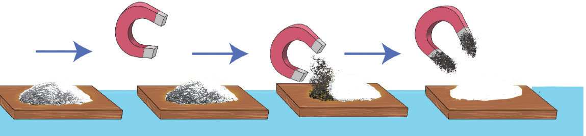

Sumaku hutumika kutenganisha vitu vyenye asili ya chuma na visivyo na asili ya chuma. Mbinu hii hutumika katika viwanda vya vyakula, kutenganisha chembechembe za chuma kutoka kwenye bidhaa za chakula. Tazama au sikiliza maelezo ya Kielelezo namba 13. Hii husaidia kuhakikisha usalama na kuzuia uchafuzi wa chakula.

Unga wa chuma
Unga
Kielelezo namba 13: Sumaku ikitenganisha chembechembe za chuma kutoka kwenye unga
Sumaku hutumika pia katika vifaa mbalimbali vya kielektroniki na kiteknolojia. Baadhi ya vitu hivyo ni friji, redio, simu, kompyuta, jenereta, kadi za benki, vinasa sauti na vipaza sauti.